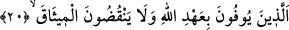
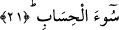

sınıfına giren fiillerdir.
Ancak böyle bir fiili kendine yapman câiz iken başkasına yapman ancak birtakım
şartlarla câiz olabilir. Kendine yapman mübâh olan fiil, kendi avret yerine bakmandır.
Başkalarıyla ilgili fiillerin ise sekiz sınıfı ilgilendirir. Bunlar mal, çocuk, hanım, köle-
câriye, hayvan, komşu, işçi, îman kardeşin ve toprak kardeşindir.
20. Onlar, Allah’ın ahdini yerine getirenler ve verdikleri sözü bozmayanlardır.
“Onlar, Allah’ın ahdini yerine getirenler” Yani, “Elbette Rabbimizsin, buna şâhid
olduk.” (el-A‘râf, 7/172) diyerek Allah’ın rubûbiyyetine şâhidlik ve bunu itiraf etmekle
kendilerini bağladıkları sözleri yerine getirenler. Mîsak gününde Hak Teâlâ’ya
verdikleri sözde vefâ gösterenler.
“Ve verdikleri sözü bozmayanlardır.” Yani, gerek Allah’la aralarında yaptıkları
andlaşmayı, gerekse kendileri ile insanlar arasındaki andlaşmaları bozmazlar. Bu ifade
ile tahsisten sonra genelleme yapılmıştır.
21. Onlar Allah’ın gözetilmesini emrettiği şeyleri gözeten, Rablerinden sakınan
ve kötü hesaptan korkan kimselerdir.
“Onlar Allah’ın gözetilmesini emrettiği şeyleri gözeten,”
Bu âyette birkaç önemli husus vardır:
1- Akraba hukukuna riâyet (sıla-i rahim). Hukûkuna riâyet edilecek akrabanın kimler
olduğu ihtilaflıdır. Bunların; birinin erkek, diğerinin kadın olması durumunda
evlenmeleri haram olan akrabalar olduğu söylenmiştir. Buna göre amca, hala, dayı ve
teyzelerin çocukları sıla-i rahime dâhil değildir.
Bunların; mahrem olsun olmasın, vâris olsun olmasın bütün yakınlara şâmil olduğu da
söylenmiştir. Doğru olan görüş de budur.
Nevevî şöyle der: “En doğrusu budur. Mahrem muhterem olduğu için evlenilmesi
ebediyyen helâl olmayacak olanlardır. “Ebediyyen” sözümüz, hanımın kardeşi (baldız)
için geçerli değildir. ‘Muhterem olduğu için’ ifademiz ise lânetleşme (mülâane)
sebebiyle meydana gelen haramlık için geçerli değildir. Çünkü mülâaneden kaynaklanan
haramlık, muhterem olduğu için değil ağır yemin sebebiyledir.”